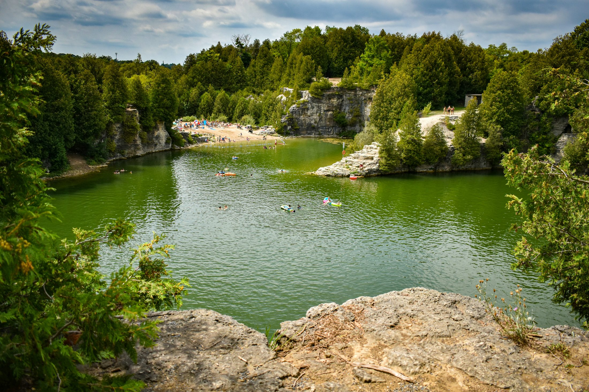
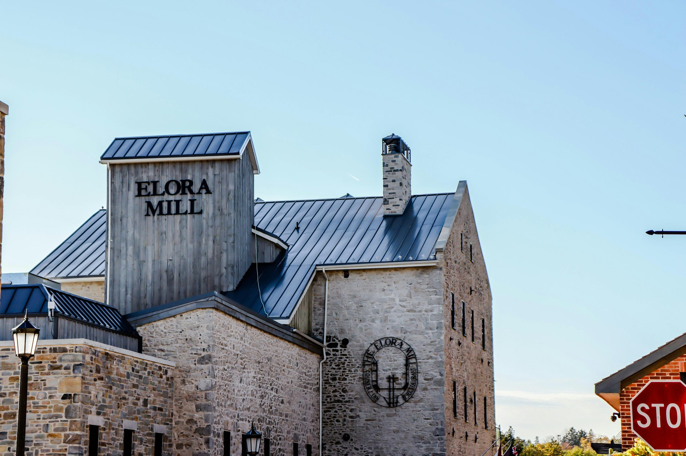
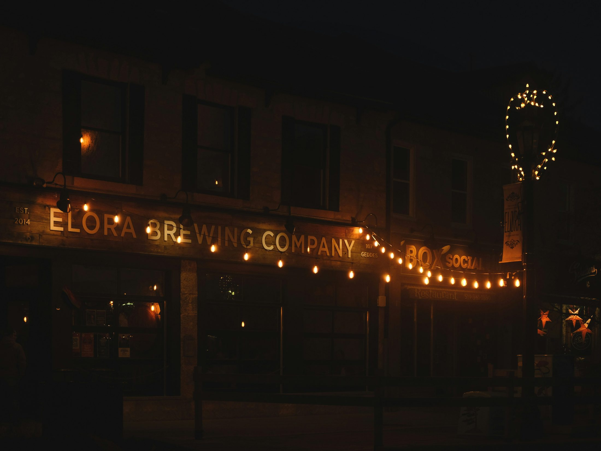
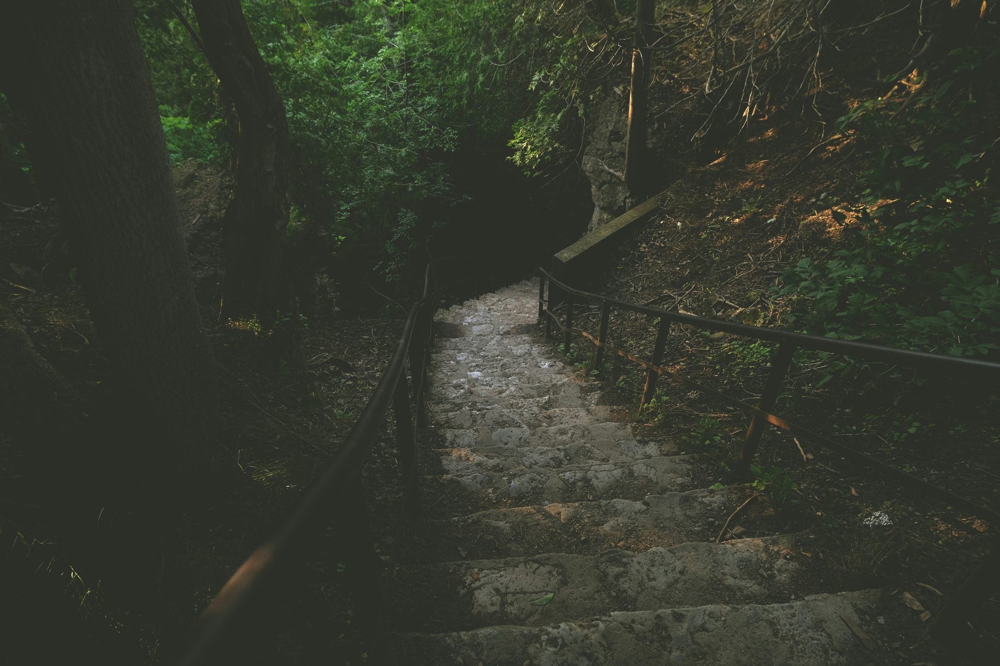
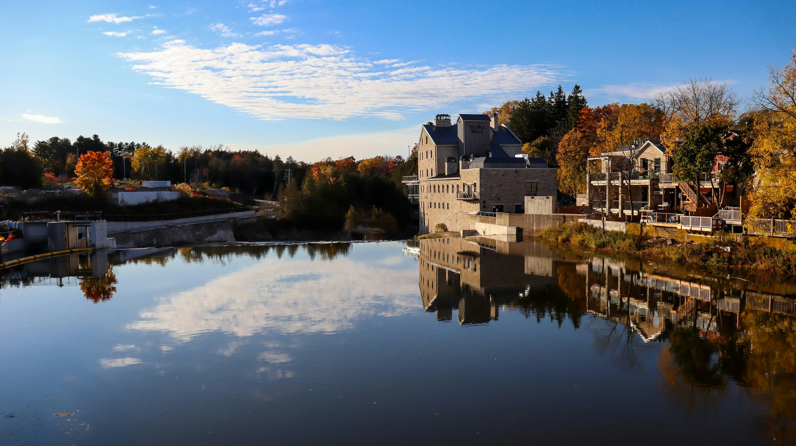

A romantic stone village wrapped around a limestone gorge: slow walks, dramatic viewpoints, riverside dining, boutique stays, and one of the easiest premium-feeling weekends from the GTA.
Elora feels like the kind of town where we would plan to stay one hour and accidentally spend the whole day.
| Season | Fit | Why |
|---|---|---|
| May–June | Excellent | Green gorge, patios, pleasant walking weather. |
| July–August | Great | Tubing and summer energy, but weekends are busier. |
| September–October | Excellent | Romantic village + fall colours. |
| Winter | Good | Cozy village feeling; gorge activities limited. |
These are the shots to intentionally make while you are there — not just random photos from the parking lot.
Where: Stone buildings and shops
Best time: Morning
Shot idea: Small-town walking photo.
Where: Elora Gorge area
Best time: Late afternoon
Shot idea: Landscape view with both of you in foreground.
Where: Riverside by the mill
Best time: Golden hour
Shot idea: Romantic hotel-and-river photo.
Tubing requires seasonal tickets and can sell out.
Parking is easier earlier in the day.
Best as a slow day trip or one-night splurge, not a rushed multi-town loop.
Add one favourite photo and one sentence here after you and Shreya visit. This turns the guide from a plan into a shared record.
Elora is one of the strongest short-trip choices because the reward is high and the drive effort is low. The village has the charm of old stone buildings, the gorge gives it natural drama, and the Elora Mill makes it feel like a true romantic escape without needing a 4-hour drive.
For your style, Elora works best as an overnight, not a rushed day trip. Arrive late morning, walk the gorge, enjoy the village, check into a stay, and let dinner be the main event.
Walk the riverside trails and lookouts over the limestone gorge. Stay behind barriers and treat the gorge as a scenic walk, not a climb-down adventure.
This is the signature romantic experience: gorge views, elevated dinner, and the feeling that you travelled much farther than you actually did.
Small shops, stone buildings, cafés, pottery, bookshops, and slow wandering. This is where the trip should breathe.
A summer swimming add-on when open and properly booked. Better as a separate half-day, not crammed into a first visit.
A nearby Scottish-influenced town with stone architecture and riverside walks. Good for Sunday morning if you stayed overnight.
Fun and memorable in summer, but it requires advance online purchase, weather awareness, and practical footwear.





No need for a brutal early start unless you are doing tubing or quarry bookings.
Park once and walk. Avoid moving the car repeatedly in the village core.
Choose based on weather and dinner timing.
| Route Rule | Why it matters |
|---|---|
| One main region per trip | Keeps the day romantic instead of exhausting. |
| Book the anchor activity first | Parking, dinner, parks, tours, and ferries can sell out. |
| Keep a weather backup | Ontario weekends can change quickly. |
Usually more sensible than forcing Elora Mill pricing. Best if the plan is more village/gorge than hotel time.
The sweet spot for your budget style: charming, walkable, comfortable, and not unnecessarily expensive.
Worth considering for anniversary-level trips or if you get a gorge-view room. The stay itself becomes the experience.
Less romantic, but useful when Elora prices are high or sold out.
Look for a village café first; the goal is atmosphere, not speed.
Keep lunch casual so dinner can be the main event.
Elora Mill is the premium choice; book ahead for a window/gorge-view experience.
Check menus first. Small towns usually have options, but the strongest vegetarian choice may be a café or Italian-style restaurant rather than a pub.
Start with downtown Elora so the trip begins slowly.
Do the lookout trail while energy is high.
Keep it casual and walkable.
Do not overpack the afternoon.
Mill area, bridge views, stone streets.
Make this the anchor of the trip.
Sunday can be Fergus or just coffee and a short walk home.
| Spring | Great for gorge flow and fresh greenery; check conservation area opening details. |
| Summer | Best for tubing/quarry, but book in advance and expect crowds. |
| Fall | Probably the most romantic season: colours, cool air, village walks. |
| Winter | Good for a cozy inn/dinner trip, but some outdoor attractions are limited. |
Use this as the quick seasonal decision guide before choosing a date.
Gorge views and village streets feel especially romantic.
Tubing, patios, and lively village energy.
Fresh greenery and strong river flow.
Cozy and quiet, but outdoor options are limited.
A quick scan to decide whether this is the right kind of trip for the two of you.